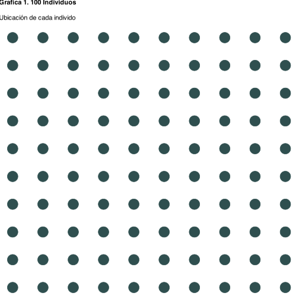
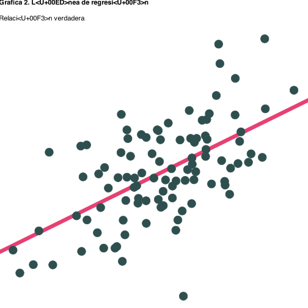
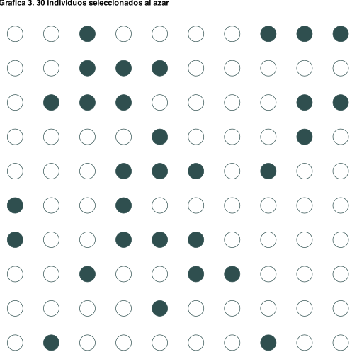
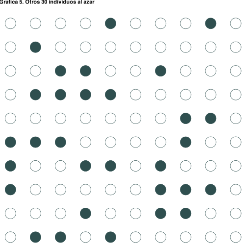
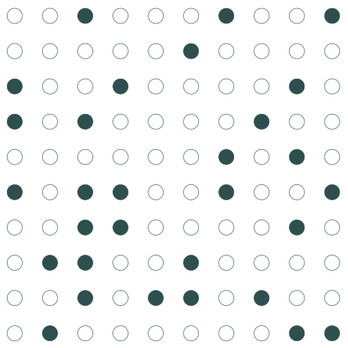
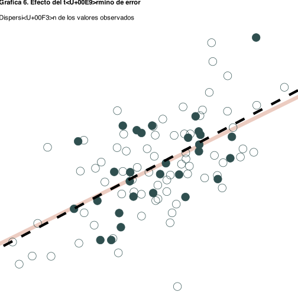

Capítulo 1 Repaso
¿Qué estudia la econometría?
La econometría es la herramienta que usamos para entender el mundo usando datos. Nos ayuda a responder preguntas como: ¿cuánto gana una persona según su nivel educativo? ¿Cómo influye la experiencia laboral en el salario? ¿Cuál es el impacto de una política pública sobre el empleo?
Pero aquí hay un reto importante: casi nunca podemos observar a toda la población. En vez de eso, trabajamos con una muestra. Usamos esta muestra para hacer inferencias sobre cómo funciona el mundo real, ese que no podemos ver completamente. En este capítulo vamos a entender, paso a paso, por qué eso genera incertidumbre —y por qué esa incertidumbre es una parte inevitable (¡y valiosa!) del análisis econométrico.
El proceso generador de datos
Supongamos que el salario de un individuo, \(y_i\), depende de forma lineal de su nivel educativo, \(x_i\):
\[ y_i \;=\; \beta_0 \;+\; \beta_1\,x_i \;+\; u_i, \]
donde \(u_i\) recoge todo lo que no observamos (habilidad, contactos, suerte…). A esta ecuación la llamaremos Proceso Generador de Datos (PGD) o modelo poblacional. El problema es que no podemos observar \(u_i\) porque es un término de error. Ni tenemos acceso a todos los individuos de la población.
¿Qué hacemos entonces?
En la práctica, tomamos una muestra aleatoria de individuos y observamos sus salarios y años de educación \((y_i,\,x_i)\), el termino de error \(u_i\) permanece oculto.
Con una muestra aleatoria de tamaño \(n\), estimamos los parámetros \(\beta_0\) y \(\beta_1\) de la siguiente manera:
\[ y_i \;=\; \hat{\beta}_0 + \hat{\beta}_1\,x_i + e_i, \qquad \hat{y}_i \;=\; \hat{\beta}_0 + \hat{\beta}_1\,x_i, \]
Donde \(\hat{\beta}_0\) y \(\hat{\beta}_1\) son los estimadores de los parámetros poblacionales \(\beta_0\) y \(\beta_1\), y \(e_i\) es el término de error muestral. A la recta que obtenemos se le llama modelo muestral. La direfencia entre este modelo y el PGD es precisamente lo que genera incertidumbre en nuestras estimaciones. Es decir que tenemos dos fuentes de incertidumbre, la muestra que compone nuestros datos y el término de error \(u_i\) que no podemos observar.
Para entender todo esto mejor, vamos primero a enfocarnos en la muestra que tenemos y cómo podemos usarla para estimar el PGD. Luego veremos cómo la incertidumbre afecta nuestras estimaciones y por qué es importante.
Construimos una población de juguete
Para ilustrar el proceso generador de datos y la incertidumbre, vamos a crear una población de juguete. Esta población será un conjunto de 100 individuos con características específicas. Luego tomaremos muestras aleatorias de esta población y realizaremos regresiones para ver cómo se comportan nuestras estimaciones en comparación con el PGD real.
Vamos a crear un mundo ficticio con 100 individuos. A cada uno le asignamos:
- \(x\) (años de educación) sigue una normal con media 5 y desviación 1.5.
- \(y\) depende linealmente de \(x\) con pendiente 0.5 y un término aleatorio \(u\sim N(0,1)\).

La relación verdadera en la población
El modelo poblacional que usamos, es decir el PGD, es: \(y = 3 + 0.5x\): Así que en promedio los salarios de los individuos aumentan en 0.5 por cada año adicional de educación. Esta es la verdad de nuestra población simulada.

Obtenemos que los coeficientes son muy similares a los que usamos para generar la población:
\[ y_i = 2.53 + 0.57 x_i + u_i \] Esto significa que el modelo poblacional es:
\[ y_i = \beta_0 + \beta_1 x_i + u_i \] Sin embargo, esa linea está fuera de nuestro alcance porque requeriría encuestar a todos los egresados. Podemos estimar la relación entre \(y\) y \(x\) en una muestra aleatoria de individuos. Comencemos tomando 30 graduados al azar de nuestro grupo de 100 individuos:

Estimemos la relación que existe entre \(y\) y \(x\) en esta muestra de 30 individuos. En la siguiente gráfica, la línea roja es el modelo poblacional y la línea negra discontinua es el modelo muestral.

Ahora encontramos unos coeficientes estimados que son diferentes a los del modelo poblacional:
PGD Modelo Poblacional
\(y_i = 2.53 + 0.57 x_i + u_i\)
Modelo muestral
\(\hat{y}_i = 2.36 + 0.61 x_i\)
Tomemos otros 30 individuos al azar de la población y veamos cómo se comporta la regresión.


Ahora encontramos los siguientes coeficientes estimados:
PGD Modelo Poblacional
\(y_i = 2.53 + 0.57 x_i + u_i\)
Modelo muestral
\(\hat{y}_i = 2.79 + 0.56 x_i\)
Podemos ver que los coeficientes estimados son diferentes a los del modelo poblacional y también diferentes entre sí. Esto es normal, porque cada muestra aleatoria puede dar lugar a diferentes estimaciones.
Tomemos una tercera muestra aleatoria de 30 individuos y veamos cómo se comporta la regresión.


Ahora encontramos los siguientes coeficientes estimados:
PGD Modelo Poblacional
\(y_i = 2.53 + 0.57 x_i + u_i\)
Modelo muestral
\(\hat{y}_i = 3.21 + 0.45 x_i\)
Siguen siendo diferentes a los del modelo poblacional y también diferentes entre sí. A veces se parece mucho, a veces no tanto. La razón es simple; cada muestra incluye un conjunto diferente de personas y eso cambia los resultados.
Ahora repitamos esto 10,000 veces. Este ejercicio se conoce como Ejercicio de Monte Carlo. Vamos a tomar 10,000 muestras aleatorias de 30 individuos de nuestra población y estimar los coeficientes de regresión para cada muestra. Luego, graficaremos todas las líneas de regresión obtenidas para ver cómo se distribuyen en relación con la línea poblacional.
¿Lo interesante? Aunque cada recta individual es distinta, en promedio todas convergen hacia la recta verdadera (la primera que estimamos).

En resumen, en promedio las líneas de regresión se ajustan muy bien a la línea de la población. Sin embargo, las líneas individuales (muestras) pueden desviarse significativamente. Las diferencias entre las muestras individuales y la población generan incertidumbre para el econometrista.
👉 Este resultado es tranquilizador: aunque nuestras estimaciones varían de muestra a muestra, en promedio nos acercamos a la verdad. Esto es lo que se conoce como insesgamiento del estimador MCO.
Eso implica que cuando estimamos los coeficientes de regresión, no podemos estar seguros de que nuestros estimadores sean exactamente iguales a los parámetros poblacionales. En cambio, obtenemos estimaciones que son variables aleatorias. En otras palabras, \(\hat{\beta}\) en sí mismo es una variable aleatoria, dependiente de la muestra aleatoria. Cuando tomamos una muestra y realizamos una regresión, no sabemos si es una muestra ‘buena’ ( \(\hat{\beta}\) está cerca de \(\beta\)) o una muestra ‘mala’ (nuestra muestra difiere significativamente de la población).
Mantener un registro de esta incertidumbre es clave para el análisis econométrico. Nos permite entender la precisión de nuestras estimaciones y cómo podemos mejorar nuestro modelo.
¿Y si mi muestra es mala?
❓ Pregunta del lector: ¿Qué pasa si me toca una muestra mala? ¿Cómo lo sé? ¿Se puede hacer algo para reducir esa incertidumbre?
Una muestra mala es una muestra que, por puro azar, no representa bien a la población. Esto puede pasar incluso si tomamos la muestra correctamente. En esos casos, los estimadores como \(\hat{\beta}_1\) pueden estar lejos de su valor verdadero \(\beta_1\), y nuestras conclusiones podrían ser engañosas.
¿Cómo saber si me tocó una muestra mala?
No podemos saberlo con certeza, porque no conocemos la verdad poblacional. Pero hay señales que nos pueden alertar:
- Errores estándar grandes: indican mucha variabilidad en la estimación.
- Intervalos de confianza anchos: reflejan gran incertidumbre.
- Signos o tamaños inesperados en los coeficientes: pueden deberse a una muestra no representativa.
- Pruebas de diagnóstico del modelo: pueden revelar si los supuestos no se cumplen (residuos no normales, heterocedasticidad, etc.).
¿Se puede reducir la incertidumbre muestral?
¡Sí! Estas son algunas estrategias comunes:
Aumentar el tamaño de la muestra (\(n\)) Entre más observaciones, más cerca estará \(\hat{\beta}\) de \(\beta\) (por la ley de los grandes números).
Mejorar el diseño muestral Muestreos estratificados, por conglomerados o con pesos pueden hacer las estimaciones más precisas.
Controlar por variables relevantes Incluir más covariables reduce la varianza al explicar mejor el comportamiento de \(y\).
Usar estimadores eficientes o robustos Si hay heterocedasticidad, los errores estándar robustos o el uso de métodos como MCO ponderado pueden mejorar la precisión.
✅ La importancia de la fuente de los datos
Una forma muy eficaz de minimizar el riesgo de una muestra sesgada es usar datos de fuentes confiables y con buen diseño muestral.
Por ejemplo, confiar en los datos del DANE en Colombia o de institutos nacionales de estadística en otros países es una práctica fundamental. Estas instituciones diseñan cuidadosamente sus encuestas (como la ECH, ENUT o ENDS) para asegurar que sean representativas de la población. Si el muestreo está bien hecho desde el inicio, el margen de error se reduce y nuestras inferencias serán mucho más confiables.
💡 Mensaje clave: La incertidumbre no es un error: es una característica natural del trabajo con datos. Lo importante no es eliminarla, sino medirla bien, comunicarla con claridad y tenerla en cuenta al tomar decisiones.
¿Y si mantengo fija la muestra?
Hasta ahora nos enfocamos en la incertidumbre que surge por el azar de la muestra. Ahora exploramos otra fuente igual de importante: la variabilidad del término de error , incluso si la muestra es fija.
Hasta ahora vimos que la incertidumbre puede surgir del hecho de que trabajamos con una muestra: cada subconjunto aleatorio de la población genera estimadores ligeramente diferentes.
Pero hay una segunda fuente de incertidumbre: el término de error \(u_i\).
Recordemos el modelo:
\[ y_i = \beta_0 + \beta_1 x_i + u_i \]
Aunque tuviéramos toda la población (o una muestra perfecta), no podríamos predecir perfectamente \(y_i\) porque el valor de \(u_i\) sigue siendo desconocido.
El termino de error \(u_i\) representa todo lo que influye en \(y_i\) pero no está capturado por \(x_i\). Por ejemplo, en un modelo donde \(y_i\) es el salario y \(x_i\) es la educación:
- Habilidades intrínsecas
- Redes de contacto
- Experiencia laboral previa
- Suerte (¡sí, también cuenta!)
Todo eso se concentra en \(u_i\), que es no observable, pero no irrelevante. Incluso si estimamos \(\hat{y}_i = \hat{\beta}_0 + \hat{\beta}_1 x_i\) con una muestra fija:
- Nuestra recta de regresión capta la tendencia promedio.
- Pero los valores observados de \(y_i\) se dispersan alrededor de la recta por culpa de \(u_i\).
Esto se ve así:

Al repetir el proceso de muestreo muchas veces, cada muestra tendrá su propia recta de regresión, pero todas estarán dispersas alrededor de la recta poblacional.
Vamos a hacer lo siguiente:
- Tomamos una sola muestra fija de 30 individuos de la población.
- Mantenemos sus valores de \(x_i\) constantes.
- Re-generamos el término de error \(u_i \sim N(0,1)\) varias veces.
- Calculamos nuevos valores de \(y_i = 3 + 0.5x_i + u_i\) en cada iteración.
- Estimamos una regresión para cada muestra simulada.
Esto nos permite ver cómo las estimaciones varían únicamente por culpa del término de error, manteniendo fija la muestra.
 Aquí vemos que, aunque la muestra es fija, las rectas de regresión se dispersan alrededor de la recta poblacional. Esto es porque el término de error \(u_i\) introduce variabilidad en los valores de \(y_i\).
Aquí vemos que, aunque la muestra es fija, las rectas de regresión se dispersan alrededor de la recta poblacional. Esto es porque el término de error \(u_i\) introduce variabilidad en los valores de \(y_i\).
☝️ Una aclaración importante sobre el insesgamiento
Al repetir el proceso de muestreo muchas veces, cada muestra tendrá su propia recta de regresión.
Pero ojo: aunque esas rectas se vean “alrededor” de la recta poblacional en nuestras simulaciones, esto no siempre ocurre en la vida real.
El hecho de que las estimaciones se agrupen alrededor de los verdaderos valores poblacionales depende de que se cumplan los supeustos de modelo de regresión lineal.
Por ejemplo:
- Si el término de error \(u_i\) está correlacionado con \(x_i\) (por ejemplo, porque omitimos una variable relevante), entonces nuestro estimador de \(\beta_1\) estará sesgado.
- Si hay errores de medición, mala especificación del modelo o selección no aleatoria, también se viola el insesgamiento.
🎯 ¿Cuándo es cierto que nuestras estimaciones “se agrupan” alrededor del verdadero \(\beta_1\)?
Cuando se cumplen los supuestos del modelo clásico de regresión lineal, en particular exogeneidad estricta o independencia del término de error \(u_i\) respecto a las variables explicativas \(x_i\). En algunos libros se conoce como esperanza condicional igual cero: \[ \mathbb{E}[u_i \mid x_i] = 0 \]
🔁 Si este supuestos se cumplen, entonces nuestro estimador de Mínimos Cuadrados Ordinarios (MCO) es insesgado: \[ \mathbb{E}[\hat{\beta}_1] = \beta_1 \]
Es decir, si repitiéramos el experimento de muestreo muchas veces, el promedio de nuestras estimaciones convergería al verdadero valor poblacional.
Pero si no se cumplen, como veremos más adelante, podemos tener:
- Estimadores sesgados
- Estimadores inconsistentes
- Intervalos de confianza y pruebas de hipótesis inválidos
💬 Entonces, ¿las simulaciones que hicimos son “realistas”?
Sí… bajo los supuestos del modelo clásico. En nuestras simulaciones controlamos todo: sabemos exactamente cómo se genera \(y_i\), y aseguramos que \(u_i\) sea independiente de \(x_i\). Por eso nuestras estimaciones tienden a agruparse cerca de la recta poblacional.
Pero en el mundo real, los datos no vienen con etiqueta de “supuestos cumplidos”.
Por eso uno de los grandes desafíos del análisis econométrico es diagnosticar y justificar si los supuestos se cumplen. Y si no se cumplen, buscar soluciones: variables instrumentales, variables omitidas, diseños cuasiexperimentales, diseños experimentales, etc.
💡 Conclusión clave: El término de error no desaparece, incluso cuando tenemos una muestra grande o bien diseñada. Por eso, cualquier estimación puntual (\(\hat{\beta}_1\)) debe ir acompañada de una medida de incertidumbre, como el error estándar o un intervalo de confianza. Esto nos prepara para el siguiente paso: la inferencia estadística.
📘 Preguntas de repaso
¿Qué diferencia hay entre el modelo poblacional y el modelo muestral? ¿Cuál de los dos observamos y cuál inferimos?
¿Por qué decimos que el término de error \(u_i\) es una fuente de incertidumbre, incluso si la muestra está fija?
¿Qué condiciones deben cumplirse para que el estimador de Mínimos Cuadrados Ordinarios (MCO) sea insesgado?
¿Qué significa que un estimador sea insesgado “en promedio”? ¿Eso garantiza que cualquier muestra nos dará un buen resultado?
¿Qué implicaciones tiene usar una muestra mal diseñada o no representativa?
En la simulación Monte Carlo, ¿por qué las rectas de regresión estimadas con diferentes muestras se agrupan alrededor de la recta poblacional?
¿Qué observas cuando repetimos la estimación con una misma muestra, pero re-generamos el término de error? ¿Qué se mantiene constante y qué varía?
En tus propias palabras, ¿por qué no podemos predecir perfectamente \(y_i\) aunque conozcamos bien \(x_i\)?
¿Por qué se llama “Monte Carlo” a este método de simulación? ¿Qué relación tiene con el azar?
¿Qué riesgos implica asumir que los supuestos del modelo clásico se cumplen cuando en realidad no lo hacen?
¿Qué estrategias puedes usar si sospechas que \(u_i\) está correlacionado con \(x_i\)? Menciona al menos dos.
¿Crees que todas las fuentes oficiales de datos (como el DANE) garantizan muestras perfectamente representativas? ¿Qué condiciones lo permitirían?
✏️ Opcional para práctica adicional: simula tu propia población de juguete con una relación negativa entre \(x\) y \(y\), y repite el ejercicio de Monte Carlo. ¿Qué cambia? ¿Qué se mantiene?